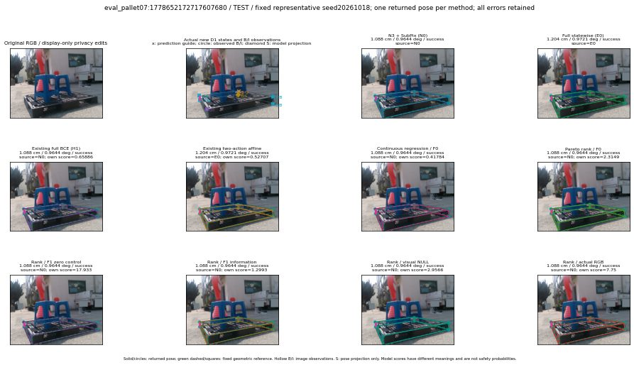

실선은 반환 자세, 초록 점선은 고정 기하 참조입니다. S는 영상 관측이 아닙니다. 점수는 모델별 의미가 다르며 보정된 안전 확률이 아닙니다. 개인정보 처리는 표시 사본에만 적용했습니다.
| 방법·seed | 위치 / 회전 / 공동성공 | 실제 출처 | 선택 후보 | 각 모델 자체 점수 |
|---|---|---|---|---|
| N0 | 1.088 cm / 0.9644 deg / success | N0 | N/A | N/A |
| E0 | 1.204 cm / 0.9721 deg / success | E0 | N/A | N/A |
| E0_REGENERATED | 1.204 cm / 0.9721 deg / success | E0 | E0_REGENERATED | N/A |
| POSEFIX_SUBPIX_PF_ANCHOR | 1.053 cm / 1.37 deg / success | OTHER | N/A | N/A |
| POSEFIX_SUBPIX_YOLO_ANCHOR | 1.053 cm / 1.37 deg / success | OTHER | N/A | N/A |
| D1_H1_MLP_s20261018 | 1.088 cm / 0.9644 deg / success | N0 | N0 | 0.6588592529296875 |
| D1_H1_MLP_s20261019 | 1.088 cm / 0.9644 deg / success | N0 | N0 | 0.6529935002326965 |
| D1_H1_MLP_s20261020 | 1.088 cm / 0.9644 deg / success | N0 | N0 | 0.551025390625 |
| D1_H1_PAIR_MLP_s20261018 | 1.088 cm / 0.9644 deg / success | N0 | N0 | 0.002936325967311859 |
| D1_H1_PAIR_MLP_s20261019 | 1.088 cm / 0.9644 deg / success | N0 | N0 | 0.5838269591331482 |
| D1_H1_PAIR_MLP_s20261020 | 1.088 cm / 0.9644 deg / success | N0 | N0 | 1.1775538921356201 |
| D1_H1_PAIR_ROLE_AFFINE_s20261018 | 1.204 cm / 0.9721 deg / success | E0 | E0_REGENERATED | 0.5270658731460571 |
| D1_H1_PAIR_ROLE_AFFINE_s20261019 | 1.204 cm / 0.9721 deg / success | E0 | E0_REGENERATED | 0.6361426711082458 |
| D1_H1_PAIR_ROLE_AFFINE_s20261020 | 1.088 cm / 0.9644 deg / success | N0 | N0 | 0.42116779088974 |
| R_CONT_F0_s20261018 | 1.088 cm / 0.9644 deg / success | N0 | N0 | 0.4178400933742523 |
| R_CONT_F0_s20261019 | 1.088 cm / 0.9644 deg / success | N0 | N0 | 0.6254093647003174 |
| R_CONT_F0_s20261020 | 1.088 cm / 0.9644 deg / success | N0 | N0 | 0.5394467115402222 |
| R_ORDER_F0_s20261018 | 1.088 cm / 0.9644 deg / success | N0 | N0 | 2.3148791790008545 |
| R_ORDER_F0_s20261019 | 1.088 cm / 0.9644 deg / success | N0 | N0 | 6.340947151184082 |
| R_ORDER_F0_s20261020 | 1.088 cm / 0.9644 deg / success | N0 | N0 | -3.4057772159576416 |
| R_ORDER_F1_ZERO_s20261018 | 1.088 cm / 0.9644 deg / success | N0 | N0 | 17.9333553314209 |
| R_ORDER_F1_ZERO_s20261019 | 1.088 cm / 0.9644 deg / success | N0 | N0 | 17.648954391479492 |
| R_ORDER_F1_ZERO_s20261020 | 1.088 cm / 0.9644 deg / success | N0 | N0 | 10.237224578857422 |
| R_ORDER_F1_s20261018 | 1.088 cm / 0.9644 deg / success | N0 | N0 | 1.2992668151855469 |
| R_ORDER_F1_s20261019 | 1.088 cm / 0.9644 deg / success | N0 | N0 | 8.280085563659668 |
| R_ORDER_F1_s20261020 | 1.088 cm / 0.9644 deg / success | N0 | N0 | 2.6762399673461914 |
| V_ORDER_NULL_s20261018 | 1.088 cm / 0.9644 deg / success | N0 | N0 | 2.9565541744232178 |
| V_ORDER_NULL_s20261019 | 1.088 cm / 0.9644 deg / success | N0 | N0 | 3.5263783931732178 |
| V_ORDER_NULL_s20261020 | 1.088 cm / 0.9644 deg / success | N0 | N0 | 5.815001487731934 |
| V_ORDER_RGB_s20261018 | 1.088 cm / 0.9644 deg / success | N0 | N0 | 7.749957084655762 |
| V_ORDER_RGB_s20261019 | 1.088 cm / 0.9644 deg / success | N0 | N0 | 3.382025957107544 |
| V_ORDER_RGB_s20261020 | 1.088 cm / 0.9644 deg / success | N0 | N0 | -8.342782974243164 |